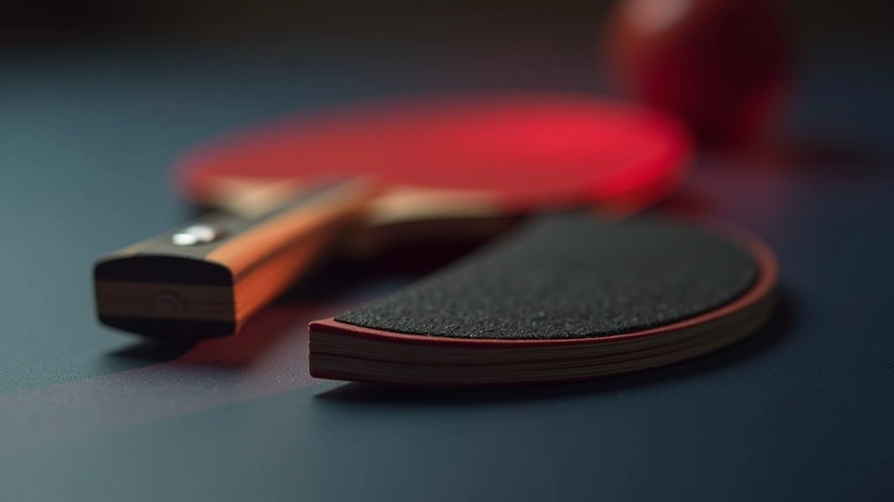
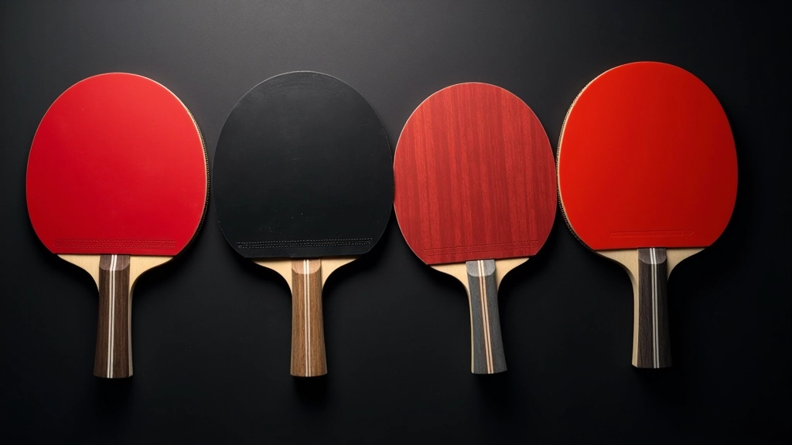

اختيار السطح المناسب حسب أسلوب لعبك
تعرف على كيفية اختيار السطح المناسب بناءً على أسلوب لعبك سواء كنت لاعب هجوم أم دفاع
تعرّف على كيفية اختيار المحترفين لمعداتهم والمعايير التي يركزون عليها لتحسين أدائهم في المباريات

اللاعبون في المستويات العالية لا يختارون مضاربهم بنفس طريقة المبتدئين. هناك فرق جوهري في النهج والتفكير. بينما يركز المبتدئون على السعر والمظهر، يركز المحترفون على تفاصيل دقيقة جداً قد لا يلاحظها معظم الناس.
الأداء العالي يتطلب فهماً عميقاً لكل عنصر من عناصر المعدة. من سمك الإسفنج إلى صلابة الشفرة، كل شيء يؤثر على طريقة اللعب. هذا السبب يجعل اختيار المعدة الصحيحة استثماراً حقيقياً في تطور اللاعب.

يركز المحترفون على أربعة معايير رئيسية عند اختيار معداتهم:
السرعة تحدد كمية الطاقة التي تنتقل من الكرة. المحترفون يختارون سطحاً بسرعة عالية جداً (فوق 85) إذا كانوا يلعبون هجوماً قوياً، وسرعة متوسطة (75-85) للتحكم الأفضل.
القدرة على إنتاج دوران قوي هي جزء من استراتيجية اللعب. الأسطح العالية الدوران توفر مرونة أكثر في اللعب، خاصة ضد المدافعين.
الإسفنج السميك (2.1-2.2 ملم) يوفر مزيداً من السرعة والطاقة، بينما الإسفنج الأرق (1.5-1.8 ملم) يعطي تحكماً أفضل وإحساساً أكثر بالكرة.
الشفرات القاسية تعطي سرعة أكثر لكن تتطلب قوة أكبر. الشفرات المرنة توفر تحكماً أفضل وتقليل الأخطاء في الضربات.
المحترفون لا يختارون معداتهم بسرعة. هناك عملية منظمة تأخذ وقتاً وتجربة حقيقية.
هل أنت لاعب هجوم أم دفاع؟ هل تركز على السرعة أم التحكم؟ هذا يحدد اتجاه البحث بالكامل.
يجب تجربة 3-5 مضارب مختلفة على الأقل. التجربة الفعلية في التدريب توضح الفرق بشكل واضح جداً.
متابعة الأداء والملاحظات مهمة جداً. كم كانت دقة الضربات؟ هل كان التحكم جيداً؟
اختيار المضرب الذي يشعر أنه الأنسب وممارسته لفترة كافية قبل البحث عن بديل.

بعد إتقان المعايير الأساسية، هناك عوامل أخرى تؤثر على الاختيار:
ليست كل شفرة تعمل بشكل جيد مع كل سطح. الشفرات الناعمة تحتاج أسطح أكثر لزوجة، والشفرات الخشنة توفر أداءً أفضل مع أسطح ناعمة.
وزن بين 165-170 غرام يعتبر مثالياً. المضارب الخفيفة جداً تفتقد القوة، والثقيلة تسبب إرهاقاً سريعاً.
المضارب ذات التوازن نحو رأس المضرب توفر قوة أكثر، بينما التوازن نحو القبضة يعطي تحكماً أفضل.
الإحساس النفسي بالمضرب مهم جداً. إذا شعرت أنه غير مريح، فلن تلعب بثقة حتى لو كانت مواصفاته ممتازة.
اختيار المعدة المناسبة هو عملية شخصية وتتطلب فهماً عميقاً لاحتياجاتك كلاعب. المحترفون يعرفون أن المعدة الصحيحة يمكن أن تحسّن أداءهم بشكل ملموس، لكنها ليست العامل الوحيد.
التدريب المنتظم، الخبرة، والتركيز الذهني أهم بكثير من أي مضرب. لكن عندما تجتمع هذه العوامل مع المعدة المناسبة، يكون الأداء في أفضل حالاته.
ابدأ بفهم احتياجاتك الحقيقية، جرّب خيارات مختلفة بصبر، وتذكّر أن أفضل مضرب هو الذي تشعر معه براحة وثقة عند اللعب.
المحترفون لا يختارون معداتهم مرة واحدة. هم يراجعونها ويحدثونها حسب تطور أسلوب لعبهم وتغيير الظروف.

فريق التحرير والمحتوى
كتبه فريق ضربة برو التحريري، متخصص في تقديم أدلة عملية وموثوقة لاختيار مضارب وأسطح تنس الطاولة.
استكمل تعلمك عن اختيار المعدة المناسبة
تعرف على كيفية اختيار السطح المناسب بناءً على أسلوب لعبك سواء كنت لاعب هجوم أم دفاع

نصائح عملية لاختيار مضرب جيد للبدء دون إنفاق الكثير من المال

شرح مفصل للفرق بين أنواع الأسطح المختلفة وتأثيرها على أسلوب لعبك
المعلومات الواردة في هذا المقال توفر إرشادات عامة حول اختيار معدات تنس الطاولة. كل لاعب فريد ولديه احتياجات مختلفة. قد تختلف تجربتك الشخصية عن ما هو موضح هنا. نوصيك باختبار المعدات بنفسك والتشاور مع مدربين ذوي خبرة قبل اتخاذ قرار الشراء. ضربة برو لا تضمن أن هذه المعايير ستحسّن أدائك مباشرة، لكنها تقدم إطاراً مفيداً للتفكير.